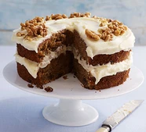
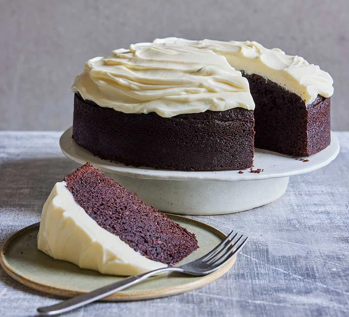

Cakes
Carrot Cake

Top this classic carrot cake with moreish cream cheese
icing and chopped walnuts or pecans. Serve as a sweet treat with a
cup of tea any time of the day.
- 230ml vegetable oil
- 100g natural yogurt
- 4 eggs
- 1/2 orange
- 265g raising flour
- 335g sugar
- 265g carrots
Chocolate Guinness Cake

Bake this cake with Guinness to enhance the flavour of
the chocolate sponge. It's made with soured cream and
finished with a creamy cheese frosting
- 225g unsalted butter
- 100g cocoa powder
- 2 eggs
- 150 sour cream
- 2 tbsp vanilla paste
- 275g plain flour